Engineering
Quill
Large flight feathers were cut into pens. Fine “crowquill” nibs still carry the name.
Relations between two things — and what it takes to see them.
Bridge ↔ wading bird. Cycad ↔ rhinoceros. Cycad ↔ poetry.
Before we open the six lenses again, a step back: what does it mean to connect two things?
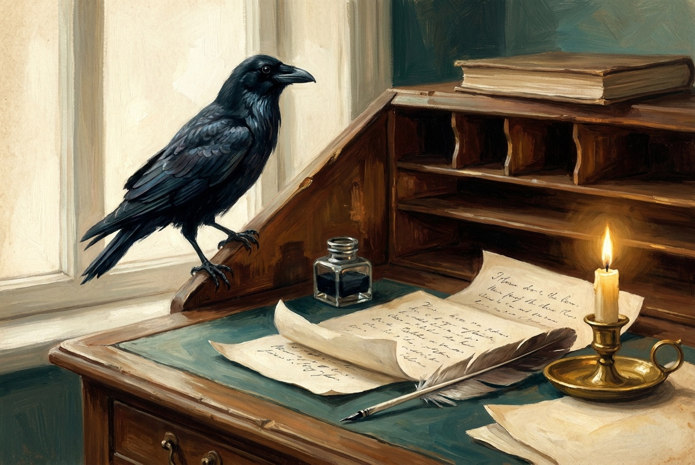
“Have you guessed the riddle yet?”
“No, I give it up. What’s the answer?”
“I haven’t the slightest idea,” said the Hatter.
“The Riddle, as originally invented, had no answer at all.”— Preface, 1896 edition
A riddle with no answer is an open invitation: every answer is a connection someone made.
Two starting points: quill (feathers write) · tree (ravens nest in trees; desks are wood)
Large flight feathers were cut into pens. Fine “crowquill” nibs still carry the name.
Ravens nest in trees; desks are built from them — oak, walnut, mahogany.
Iron-gall ink was brewed from oak galls. Raven-black, ink-black.
A desk’s cubbies are named after nest holes in a dovecote. Ravens hide food; desks hide papers.
Odin’s ravens, Huginn and Muninn, are “Thought” and “Memory” — what we bring to a desk.
Poe wrote “The Raven” (1845) — at a desk. Sam Loyd: “Because Poe wrote on both.”
Material links (quill, tree, ink) · word links (pigeonhole) · cultural links (Odin, Poe)
“Because it can produce a few notes, tho they are very flat; and it is nevar put with the wrong end in front!”
Nevar = raven spelled backwards. Printers “corrected” it to never.
“Because the notes for which they are noted are not noted for being musical notes.”
Plays on three meanings of note.
“Because there is a B in both and an N in neither.”
A trick: true of the words “both” and “neither” — not of raven or desk.
Carroll’s “nevar” is a transformation — reverse the word — just like turning a cycad upside down to find a horn.
Your turn: find one more way a raven is like a writing-desk.
We understand something new by relating it to something we already know.
New knowledge sticks when it attaches to old knowledge. An isolated fact fades; a connected one is kept.
Many breakthroughs join two fields that were never meant to meet — a wine press becomes a printing press; a burr on a dog becomes Velcro.
A thing's meaning lives in its relations: what it is like, what it causes, what it is used for, what it recalls.
A connection is a relation: A ↔ B, through some idea.
The idea in the middle — support, threshold, defense, shape — is where the thinking happens.
Traces surprising historical chains between inventions, people and ideas. The Knowledge Web project (k-web.org) aims to make those links navigable.
Escape habitual thought on purpose. The random-word technique forces an unrelated concept into the problem to spark new associations.
Bisociation: seeing one idea in two frames of reference at once — the shared root of humor, discovery and art.
Creativity brings remote associations together usefully. Basis of the Remote Associates Test: cottage · Swiss · cake → cheese.
Analogy is the core of cognition, not decoration. We grasp the unfamiliar by mapping it onto the familiar.
Roll-and-link storytelling, building ideas from icons, and finding hidden groupings. Burke even made a Connections game (1995).
Piers carry a deck above water. Long legs carry a body above water.
A bridge links two shores. A heron links aquatic and land food webs.
Bridge shade and currents gather fish — and the heron hunts there.
Both live at a boundary: land, water, air. One built, one born.
“Both are near water” is a coincidence, not a connection.
A good connection is structural, causal, metaphorical or historical.
Some connections are discovered. Others are invented.
Rhino: size, thick skin and a horn.
Cycad: spines and sharp leaflets — and toxins such as cycasin.
New question: why does a plant that can't flee need both?
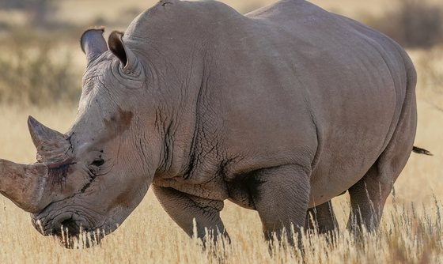
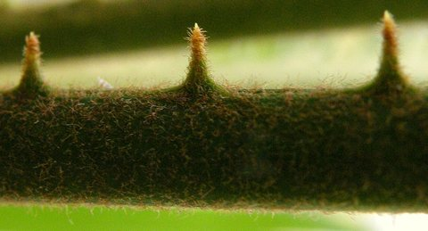
A horn tapers up from a broad base. A cycad rises from a narrow trunk to a broad crown. Flip one, and you see the other.
Imperfect — the crown is many fronds, not one surface — but it changes how we look at both.
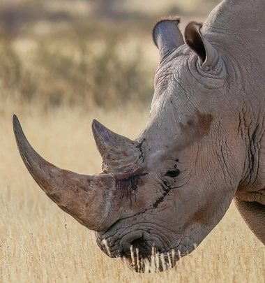
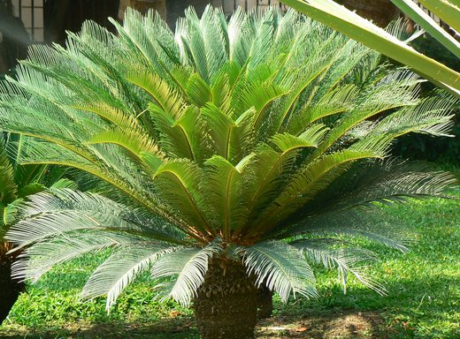
Inversion, exaggeration and change of scale are tools for making connections.
Photos via Wikimedia Commons: rhino — Giles Laurent, CC BY-SA 4.0 · cycad — Dinesh Valke, CC BY-SA 2.0 · cycad spines — Marija Gajić, CC BY-SA 4.0
Click an item on one side,
then its partner on the other.
Relations carry across; attributes stay behind. — Dedre Gentner, structure-mapping (1983)
A tiny, heavy nucleus with electrons circling it — the planetary picture.
An orbiting charge gives off light, loses energy and spirals in — in about a hundred-billionth of a second. Atoms would not last.
The electron jumps between them, and each jump down gives off light of one colour: red for 3 → 2, blue-green for 4 → 2.
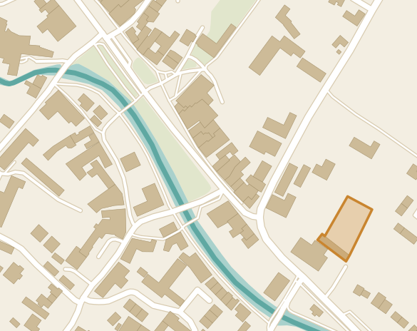
River Windrush The Model Village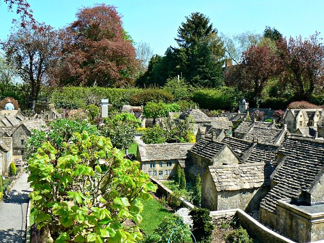
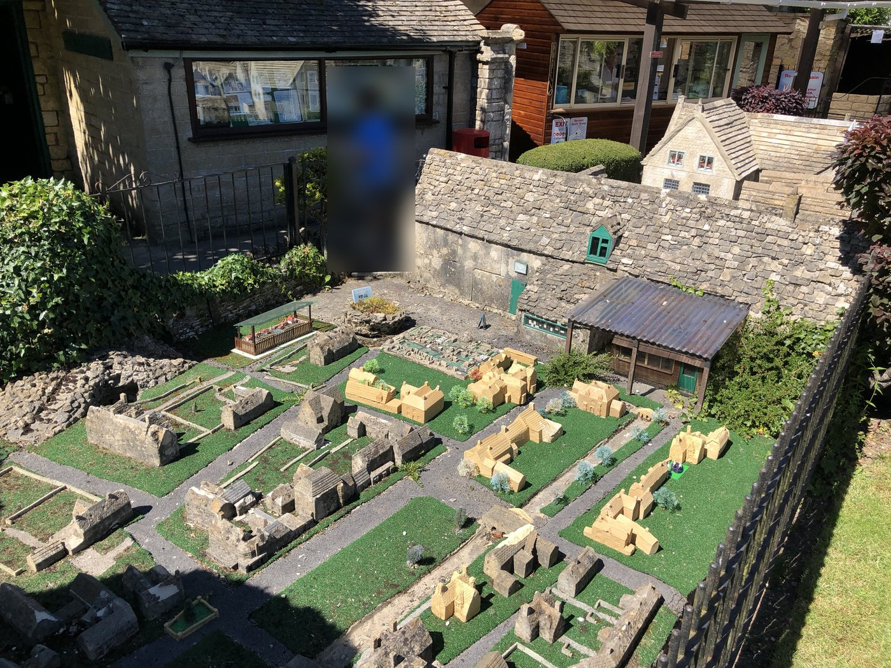
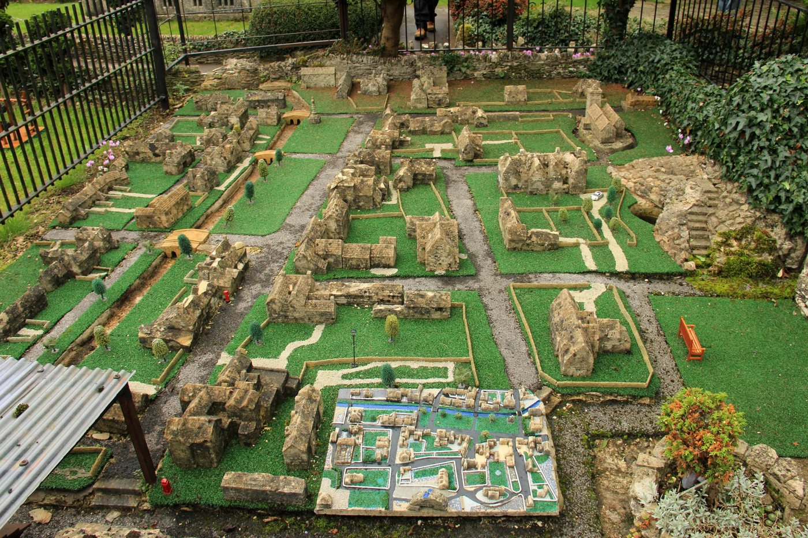
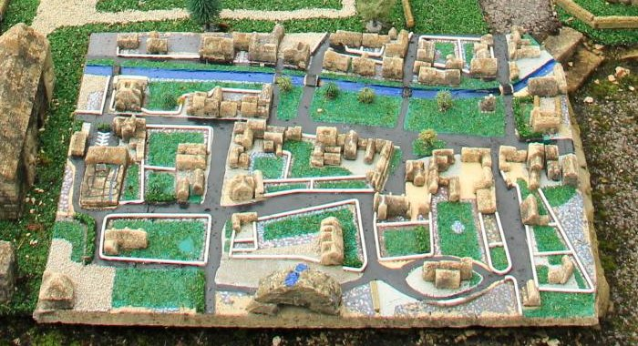
Map data © OpenStreetMap contributors · 1:9 overview: Brian Robert Marshall, CC BY-SA 2.0 · 1:81 from above and 1:729: Karen Roe, CC BY 2.0 · other photos: Paul Fishwick
Bourton-on-the-Water, Gloucestershire. The amber outline is the model village, behind the Old New Inn.
The village rebuilt in Cotswold stone by local craftsmen, 1936–1940.
Inside the model village is a model of the model village.
Now look at the bottom centre.
Each level copies the one that contains it.
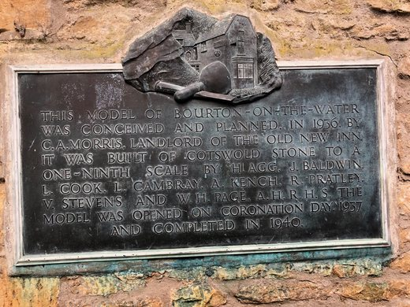
“…built of Cotswold stone to a one-ninth scale… opened on Coronation Day 1937.” — the plaque
Drag each card into a box — or click it to cycle. Kept in the model, or lost?
A model keeps what its makers chose — and freezes it. In time, it becomes a record of the past.
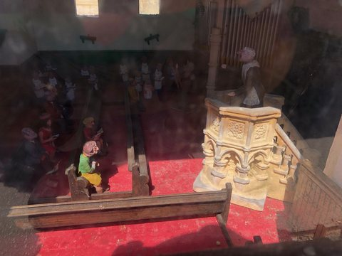
Interiors? Some were kept: the model church has pews, a pulpit and a congregation.
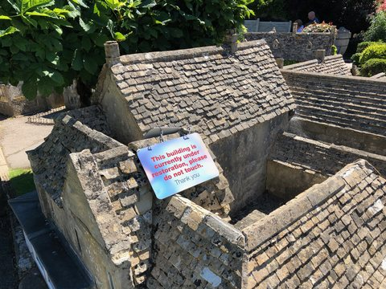
The present day? “This building is under restoration.” The model ages too — but shows the 1930s.
Seeing a cycad through poetry is connecting the cycad to poetry.
Six lenses = six guaranteed starting points for a connection.
Connection alone can be done with eyes closed. LAMESH asks us to look first — and to stay open to unfamiliar lenses.
Connection-making is not merely a way of combining knowledge. It can change what we notice in the first place.
Once you see a cycad as an upside-down horn, you look at its geometry differently.
Once you compare its defenses to a rhino's, it stops being scenery and becomes an organism in a struggle.
Draw an object, a target and a lens. Describe a connection — however unexpected.
Immediate both look armored and prehistoric
Investigative compare mechanical and chemical defense
Creative could a rhino safely eat a cycad? Find out.
Surprise did it make us see something new?
Plausibility does it hold up?
Fruitfulness does it lead to further questions?
A web app (free on GitHub) that turns one image into many connections.
Three lens styles: curated multi-lens · LAMESH lenses · single lens
Galleries so far: Proto Gallery (Fishwick) · Experimental Publishing (Malina & Chen)
Click the link, or scan the code with your phone.

As you explore, ask:
Which connection did this lens make? What did it make you notice that you hadn't seen before?